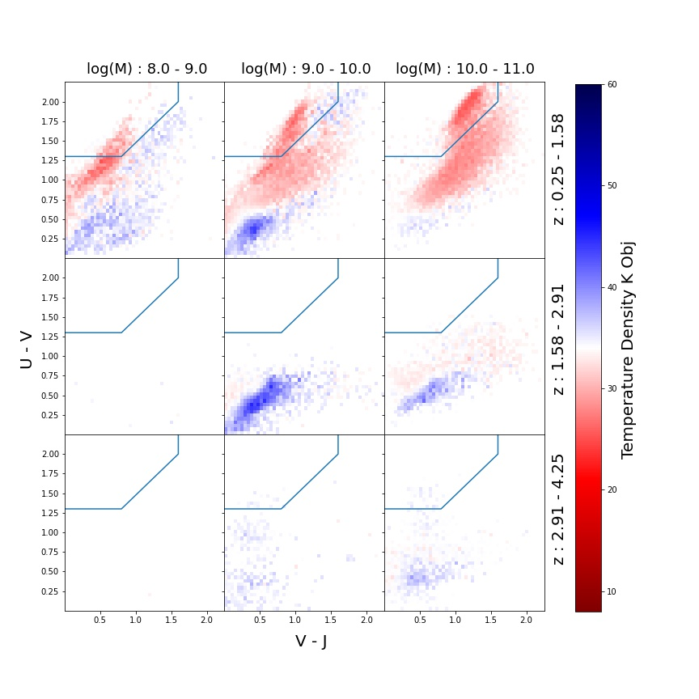

The Earliest Stage in Galaxy Evolution
In this work, we demonstrated that a new method to estimate the dust temperatures of galaxies from photometric data can be used to help identify a previously unobserved earliest-stage in galaxy evolution.
Introduction
The initial mass function (IMF) of a galaxy describes the distribution of stellar masses generated inside a galaxy. Dr. Adam Jermyn and Dr. Charles Steinhardt showed that this function should have some dependence on the dust temperature in a galaxy. Since stars are formed from a competition between gravity and thermodynamics, a higher temperature dust should be able to resist stronger gravity and thus skew the IMF slightly towards higher mass stars. Photometric surveys (large catalogs of light bands for galaxies), like the COSMOS 2020 survey, fit the photometry of a galaxy to theoretical models which depend on this IMF. Selecting the best-fit IMF the provides a proxy for the dust-temperature of the galaxy which had not been estimated before. This result led to a flurry of research including many of the papers below.
Results
With this dust-temperature in hand, we began to explore the distribution of galaxies as they quiesce. A quiescent galaxy is no longer forming stars and is nearing the end of its lifetime. Interestingly, these galaxies tend to appear red
(since the high-mass Blue stars die out earlier) and so they are easy to pick out. However, when this quiescence happens is an interesting question as the galaxies still appear "blue" when they are in the process of shutting down. The figure below is typicaly how
quiescent galaxies are selected. Plotting two light-spectra relations, the galaxies which fall in the upper left corner are labelled "quiescent". However, when we color by temperature, we see a more telling story where many galaxies outside the box have the colder temperature
characteristic of a quiescent galaxy.

Since we previously were unable to catch galaxies as they shut off, we do not yet know why galaxies turn off because we have no way to identify the galaxies which are in the act of shutting down. The primary focus of my work was to rule out some possible mechanisms for why a galaxy shuts down.
Three mechanisms were proposed for shutdown: Galaxy Mergers, Active-Galactic-Nuclei (AGNs), and Gas-Depletion. During the work, a version of the following plot was generated time and time again by multiple researchers in the group:
 In previous reseach, the galaxies in the survey were all assumed to be near the Milky Way dust temperature (~27K). Thus, there was a big grouping of Star-Forming (SF) galaxies at high Star-Formation-Rates (SFR) and quiescent galaxies with low SFR.
As it turnout, when we expanded along the temperature axis, a new grouping of galaxies with very high temperatures was found. These were coined as "core forming" as observational data confirmed they were in fact much smaller extent with star formation occuring only near
the core. Furthermore, selecting the low temperature star-forming galaxies, we observed that they did not have statistically significant fractions of mergers or AGNs. Instead, gas depletion appeared to be the most likely mechanism for shut down. This is also suggested by
the observations which show the core transitioning from "blue" to "red" and the star-formation moving outwards in the galaxy to chase the remaining dust.
In previous reseach, the galaxies in the survey were all assumed to be near the Milky Way dust temperature (~27K). Thus, there was a big grouping of Star-Forming (SF) galaxies at high Star-Formation-Rates (SFR) and quiescent galaxies with low SFR.
As it turnout, when we expanded along the temperature axis, a new grouping of galaxies with very high temperatures was found. These were coined as "core forming" as observational data confirmed they were in fact much smaller extent with star formation occuring only near
the core. Furthermore, selecting the low temperature star-forming galaxies, we observed that they did not have statistically significant fractions of mergers or AGNs. Instead, gas depletion appeared to be the most likely mechanism for shut down. This is also suggested by
the observations which show the core transitioning from "blue" to "red" and the star-formation moving outwards in the galaxy to chase the remaining dust.
Methods
In this work, we used massive databases of photometric results from telescopes (Terabytes of data). Subsets of high redshift galaxies were selected using SQL commands and the photometry was fit for various physical parameters. Using a chi-squared result with the temperature-dependent IMF,
we then had a data set of galaxy properties and dust temperatures. I primarily used Python and SQL to select candidate galaxies and explore relationships between them. Another method we demonstrated was the use of a machine-learning clustering algorithm called TSNE. TSNE is processed on the raw photometric
data and projects the high-dimensional data into a two-dimensional plane keeping similar data close together. We labelled five regimes of galaxy evolution in the plot above and saw that the TSNE clustering could be used as another mechanism to identify the core forming galaxies.
The regimes are: 1. High temperature (core-forming). 2. Transition: core-forming to typical SF 3. Typical SF 4. Transition to Quiescent 5. Quiescent.

Publications
-
Charles L Steinhardt, Vadim Rusakov, Thomas H Clark, Andrei Diaconu, John Forbes, Conor McPartland, Albert Sneppen, John Weaver
The Earliest Stage of Galactic Star Formation -
Charles L Steinhardt, Albert Sneppen, Hagan Hensley, Adam S Jermyn, Basel Mostafa, John R Weaver, Gabriel Brammer,
Thomas H Clark , Iary Davidzon, Andrei C Diaconu, Bahram Mobasher, Vadim Rusakov, Sune Toft
Implications of a Temperature Dependent IMF III: Mass Growth and Quiescence -
Charles L Steinhardt, Albert Sneppen, Basel Mostafa, Hagan Hensley, Adam S Jermyn, Adrian Lopez, John Weaver, Gabriel Brammer,
Thomas H Clark, Iary Davidzon, Andrei C Diaconu, Bahram Mobasher, Vadim Rusakov, Sune Toft
Implications of a Temperature Dependent IMF II: An Updated View of the Star-Forming Main Sequence